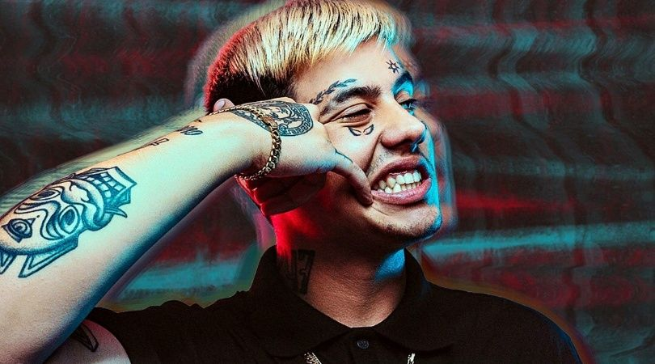

Duki
es un freestyler y cantante argentino. Conocido como Mauro Ezequiel Lombardo. En 2017 compitio en el
quinto escalon junto a MKS saliendo ganador. Las repercusiones y su creciente fama lo hacen grabar
sus temas en forma profesional, asi largando su primer sencillo "No Vendo Trap". Lanzo también
"Hello Cotto", “She Don’t Give a FO”, “Rockstar” y “Level Up”. A fines de este año lanzo “Loca”,
junto a Khea y Cazzu.
El 23 de Febrero de 2018 saca "si te sentis sola", este le dio un empuje necesario para crecer en el
panorama internacional. Luego sale "Loca remix" junto a Bad Bunny. Canta por primera vez en el
teatro Gran Rex el 4 de mayo de 2018.
Sin duda alguna, este trapero argentino, al haber evolucionado y crecido como artista en el mundo
del freestyle, ha creado un estilo muy seguro y rápido.
Duki no para de crecer como artista y
si en tan poco tiempo ha llegado tan lejos, no hay que perderle de vista, porque puede dar gratas
sorpresas para todos los amantes de la música trap.